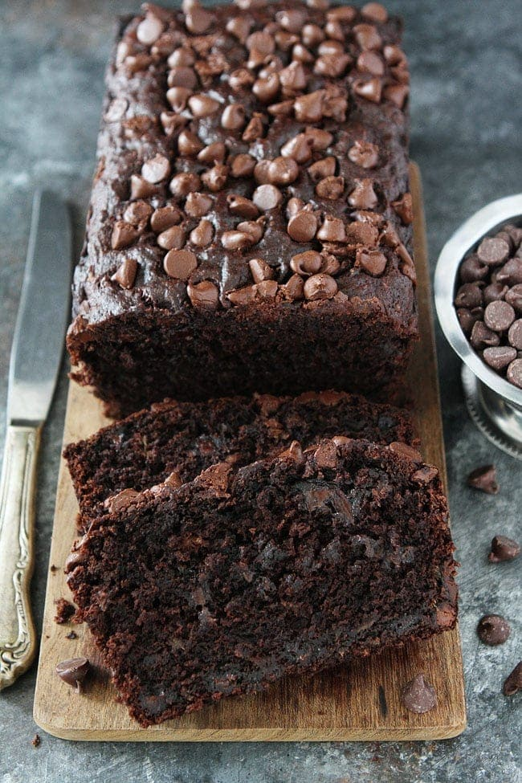

Chocolate Banana Bread

What better sweet treat for desert than a soft and sweet banana bread
Banana bread is a delicious and comforting baked treat that has become a beloved classic in many households. Its popularity lies in its perfect balance of sweet and savoury flavors, moist and tender texture, and its versatility as a snack, breakfast or dessert.
This recipe manages to keep all the classic things we love about banana bread but giving us high protein and low calories we desire
Ingredients
- 100g Banana
- 10g Cocoa powder
- 60g Self-raising flour
- 50g Chocolate protein powder (vanilla is also fine)
- 1 Tsp Baking powder
- 130ml Unsweetened almond milk
- 10g Chocolate chips
Steps
- Take the banana and mash it into a bowl with a fork.
- Add the cocoa powder, self-raising flour, protein powder, and baking powder and stir together.
- Add the almond milk a little at a time, continuing to stir as you do so. Continue to stir until a thick batter is formed.
- Add the mixture to a greased baking dish, add the chocolate chips on top and bake in the oven for 20 - 25 minutes on 200 degrees celsius.
- Take out the oven and cut into 6 even slices.
Feel free to add some low calorie sauce or ice cream to this delicious treat.
Return to home page